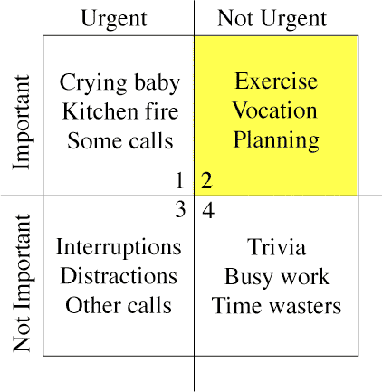

管理開發時程，做個有同理心的產品經理

每一位產品經理都一定會遇到時程 Delay 的問題
（很少聽到沒遇過的）， 造成延誤的原因並沒有標準答案，但都存在一些因素，所以產品經理很難預測何時能完成開發。在我的經驗當中，隨著時間的累積、多人參與專案及改變開發流程等，以下是我認為有助於改善產品開發預估時間的思維，這沒有絕對 *3，但可以幫助我們提高預估時程的準確性。
－目錄
－你不是在管理時程，而是在管理大家的期望
PM 不是只有把文件寫一寫出一張嘴而已，其中一個很大的責任就是激發團隊每個人的自信心，這聽起來很簡單但具體可以怎麼做呢？
- 產品開發前的任何 Meeting（不論是 Scrum Sprint, Waterfall），讓所有夥伴知道這一次產品所要開發的內容、範疇有哪些
（這裡就不細說用什麼文件來闡述），一但開發團隊知道 Scope 有多廣，就可以預期產品功能的難易度 - 確認每位夥伴都清楚功能的背景，為什麼需要這功能？這功能可以帶給產品什麼效益？
- 時程會估算錯誤，不可能完全準確！所以如果認為這功能的複雜度＋過去經驗來評估，認定無法如期交付，那盡可能每天讓 PM 了解狀況
- 這東西很困難牽太多複雜的邏輯，如果現階段做不出來，PM 一定要主動幫助團隊做 Task Breakdown，至少要做到什麼程度，然後再把這項功能排到下個階段延續做下去
簡單說，一開始要給大家一個 Expected value(期望值)，這樣相對會更有信心去做手上的工作並一一完成產品的各種功能。 產品經理不是真的要管理產品發佈的日期，而是管理大家對這個產品的期望！
－做個有同理心的產品經理
如果PM 本身有技術背景，並且實際參與開發過專案，就能夠明白產品功能的複雜度，並且也理解困難度在哪裡，一開始就可以先概算每個功能所需耗費的時間，舉例來說：
今天要做一個公司前台官網，這個官網會需要呈現的資訊有：
- 關於我們
- 聯絡我們
- 語言切換（中、英、日）
＊Task Breakdown
-
UI 介面
-
首頁
-
關於我們頁面
-
聯絡我們頁面
-
-
API
-
聯絡我們頁面，用戶可以個人資料
- 資料庫需要去儲存使用者從官網傳送的個人資訊
-
最後可以依據每個人的熟練度去概算需要多少時間，心中就會有一個大概的時程。
＊如果產品經理沒有技術背景那怎麼預估時程呢？
PM 沒有技術背景比較難預估開發時程，這確實是許多大部分 PM 遇到的難題，但可以借力使力去做這件事：
- 請 Tech Team Leader 協助
- 找團隊當中最資深的夥伴協助
這時候就非常考驗平常在團隊的人際關係了ＸＤ
－剛上任的PM怎麼估時程？
如果今天是一位新加入公司的 PM，可以透過以下的方式去估算時程：
-
理解過去專案當中團隊的開發速度、時程， 同時還要知道哪些夥伴比較理解商業邏輯、和功能的應用場景，這會幫助你估算時程。
-
凡事都有第一次遇到不要怕，贏要衝，輸要縮！都還沒輸過就得親身嘗試一下，把這個責任扛起來 Run 一次 Cycle，不要預期自己能做的非常完美，但一定要落實做好每個步驟。
－做最壞的打算，做最好的準備

隨著時間的流逝，距離產品的發佈日期越來越接近，這時候期望值就越真實，接受期望的變化就更加地困難。
PM 要能夠在開發期間定時盤點已完成、未完成的功能，再把剩下未開發、開發到一半的功能去分類。我通常會採用 Eisenhower’s Decision matrix 方式(上圖)，最後再依據功能的完整性、重要性，區分：
- Highest
- High
- Medium
- Low
- Lowest
最後得到一個目前產品功能的 Prioritization，撥雲見日後就是火力全開專注開發 High 以上等級的任務。
這跟 MVP 的精神 MoSCoW 有很大的關係，也是開發產品極為重要的一環，後續我會再分享～